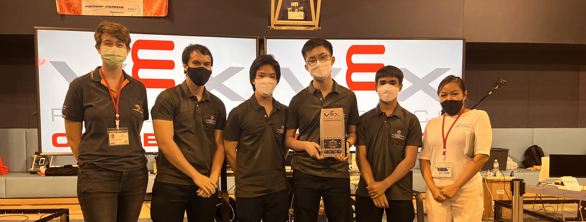

Gate Tangchartsiri
+1 (803) 524-0819 | gate.tang@gmail.com | LinkedIn | GitHub | Atlanta, Georgia
Education
Georgia Institute of Technology
Bachelor of Science in Computer Engineering, GPA: 3.80/4.00
Concentrations: Distributed Systems & Information Internetwork
August 2022 – May 2026
Technical Skills
Programming Languages: Python, Java, Visual Basic for Applications (VBA), HTML, CSS, JavaScript
Hardware Platforms: Beagle Bone, Arduino, Teensy, ESP32, ESP8266, Raspberry Pi
Cloud Services: Amazon Web Services (AWS), Heroku, Firebase
Software/Tools: Linux, Pandas, NumPy, Fusion 360, Agile Methodology, Node-RED, Microsoft Office Suite, Jira, Confluence, Asana
Languages: Thai (Native), English (Fluent), Chinese (Intermediate)
Work Experience
Carrier Corporation
Digital Product Management Intern, Atlanta, Georgia
May 2023 – August 2023
- Managed user acceptance testing, product gap analysis and teardown to assess product functionality and identify critical issues
- Implemented Brick Schema ontology and VBA script to streamline and standardize the naming of over 600 data points for seamless HVAC chiller to data analytics integration.
- Innovated and validated parameters with cross functional engineering teams for creation of automated reports on HVAC performance.
Flowers Invention Studio/Smart3 Makerspaces
Research Project Lead, Atlanta, Georgia
January 2023 – Present
- Led research project focused on developing digital architecture system through AWS and Beagle Bone Black/Teensy to automate and collect safety-related data from the Flowers Invention Studio/Makerspace cold cut saw machine.
- Managed predictive maintenance initiative to utilize collected data to provide actional insights towards Makerspace machinery.
- Spearheaded programming of Teensy to AWS IoT Core to automate and collect energy-related data from the Flowers Invention Studio/Makerspace.
Research Student Assistant, Atlanta, Georgia
October 2022 – January 2023
- Integrated AWS IoT Core and the MQTT protocol to improve machine to machine data communication.
- Implemented data analysis tools in simple moving averages for denoising sensor data to be used for research and improvement of Invention Studio.
- Optimized and improved existing Prototyping Instructor (PI) card check-in system at Georgia Tech Invention Studio.
Project Experiences
Marine Robotics Club – RoboBoat
Software Team Member, Atlanta, Georgia
October 2022 – January 2023
- Utilized Ubuntu 20.04-powered Virtual Machine to operate VRX software to test robot software and design.
- Designed CAD models for buoy obstacles used in VRX software.
- Aided in construction of computer vision software for buoy and target detection in RoboBoat competition.
Private Financial Technology Marketplace and Investment Strategy Startup
Quantitative Analyst, Bangkok, Thailand
May 2022 – December 2022
- Programmed cross-sectional momentum-based investment algorithms through pandas-based minimum variance frontier optimization.
- Developed market signal indicators through rolling means, and maximum drawdown charts to improve portfolio backtesting program.
- Analyzed and reduced noisy datasets from Yahoo Finance through 50-days simple moving averages.
VEX V5 Robotics Nationals
Team Leader, Bangkok, Thailand
September 2020 – March 2022
- Earned the prestigious VEX 2022 Excellence Award and led team to the VEX Robotics World Championship 2022 at Dallas, Texas.
- Constructed mechanical robot and PID control algorithm with the highest Offensive Power Rating of 51.6 in competition.
- Authored 8000+ word VEX GWD Handbook: https://tinyurl.com/v8y8exzy.
Internet of Things Fish Assistant Project
Project Manager, Bangkok, Thaland
November 2019 – February 2021
- Designed website using HTML and CSS to control aquarium functions like automatic feeding, and water pH balance.
- Coordinated the use of ESP8226, MQTT, and Firebase to create IoT architecture for publishing and posting water temperature data.
- Modelled automatic fish feeder servo-activated spiral dispenser using Fusion 360.
SmartWalker Walking Aid Project
Project Manager, Bangkok, Thaland
December 2018 – February 2020
- Engineered fall detection system into walking aid for the elderly through vibration sensors and bluetooth-connected application.
- Implemented cushioning mechanism that softens impact by using compound spring systems and increased contact surface area.
- Earned the High School Systems and Control Academic Award in 2018-2019 and 2019-2020..
Certificates
Certified ScrumMaster® (CSM®) - Scrum Alliance
August 2023 - August 2025

Digital Product Management Intern
Carrier Corporation
May 2023 – August 2023
TBA
Software Team Member
Marine Robotics Club – RoboBoat
October 2022 – January 2023
TBA
Team Leader
VEX V5 Robotics Nationals
September 2020 – March 2022
TBA

Certified ScrumMaster® (CSM®)
Scrum Alliance
August 2023 - August 2025